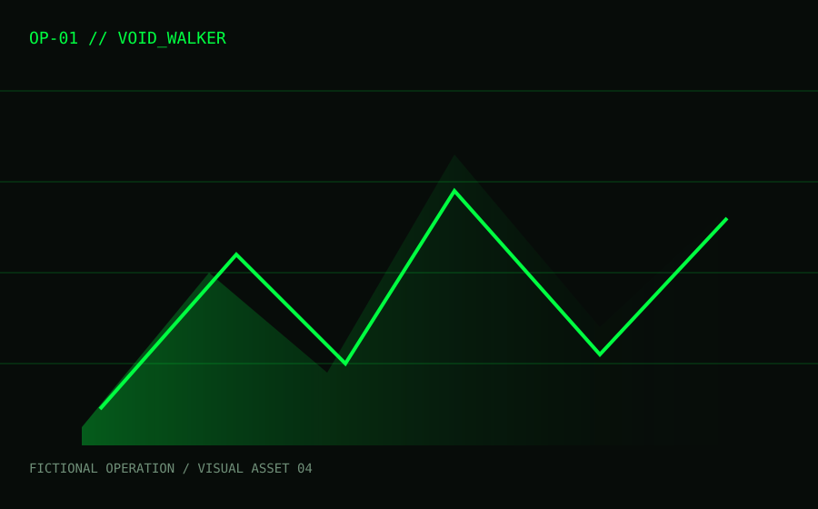
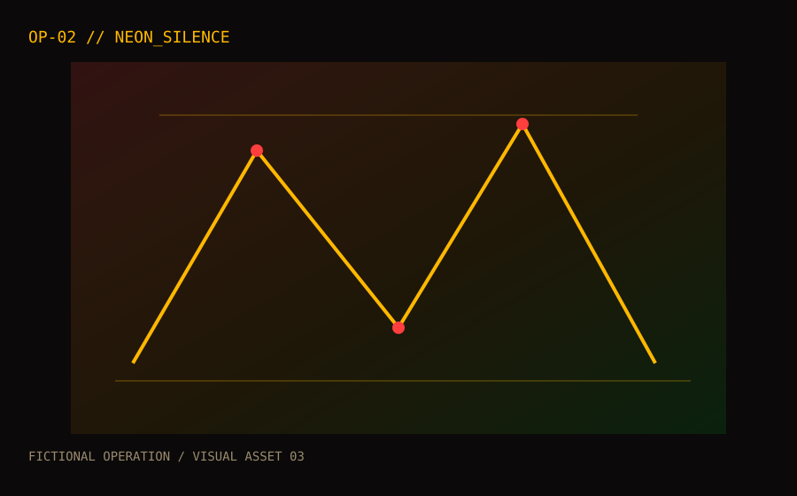
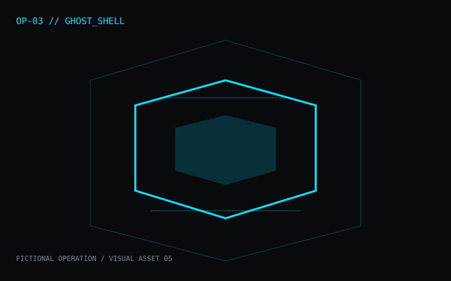

OP-01SPEED / 60 SEC
VOID_WALKER
Push your typing speed through a continuous signal. The objective is simple: keep the rhythm clean while driving your WPM upward.
START SPEED RUN ↗CLEARANCE: OPEN
Three fictional typing operations. Choose a protocol and the mission starts immediately. Speed, precision and endurance are measured live.

OP-01Push your typing speed through a continuous signal. The objective is simple: keep the rhythm clean while driving your WPM upward.

OP-02Accuracy is the mission. Keep the signal clean and finish the sequence with as few mistakes as possible.

OP-03A long-form typing mission built around consistency. Maintain your signal while the sequence becomes progressively more demanding.